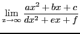
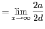

Next: Evaluation of the indeterminate Up: Theorem of mean value; Previous: Exercises Contents Index
In order to compute
Rule for evaluating the indeterminate form
 :
Differentiate the numerator for a new numerator and the denominator
for a new denominator. The value of this new fraction for the assigned
value of the variable will be the limiting value of the original fraction.
:
Differentiate the numerator for a new numerator and the denominator
for a new denominator. The value of this new fraction for the assigned
value of the variable will be the limiting value of the original fraction.
A rigorous proof of this rule is beyond the scope of this book and is left for more advanced treatises.
Solution.
|  |  |
|
|  | ||
david joyner 2008-08-11